Visual Records
Events & Engagements

Hon’ble Chief Minister welcomes APARC Chairman & Member

Visit to Dept. of Administrative Reforms & PG, GOI

Meeting with DG Indian Institute of Public Administration

Visit of Hon’ble Chairman to Ziro, Lower Subansiri

Visit of Hon’ble Chairman to Likabali
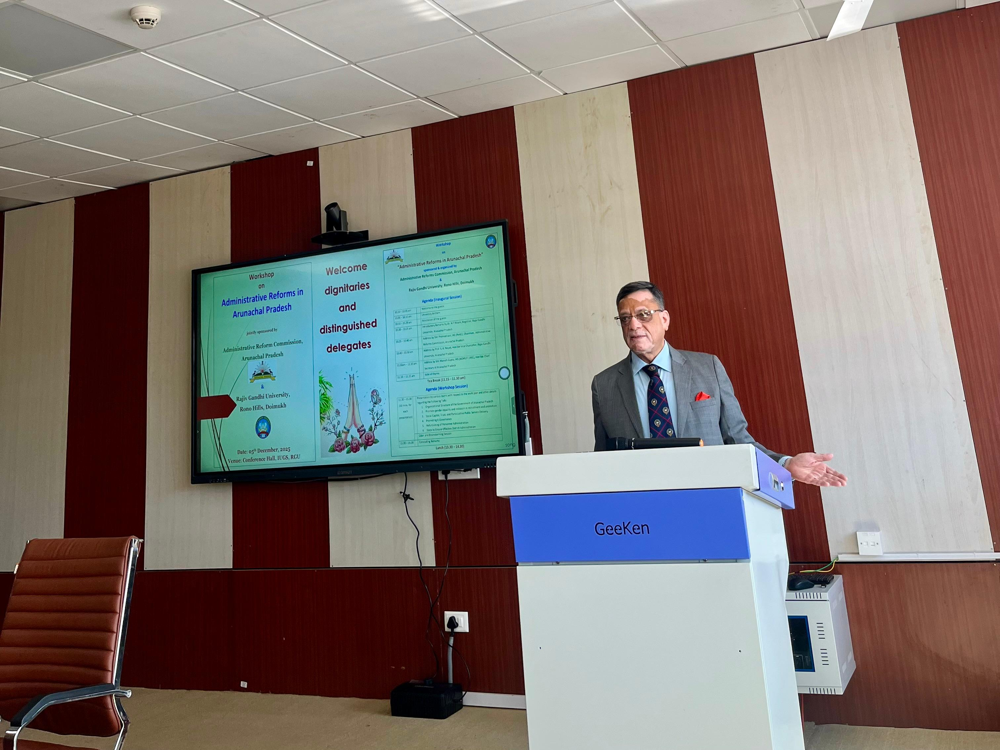
Governance Workshop at Rajiv Gandhi University (RGU)
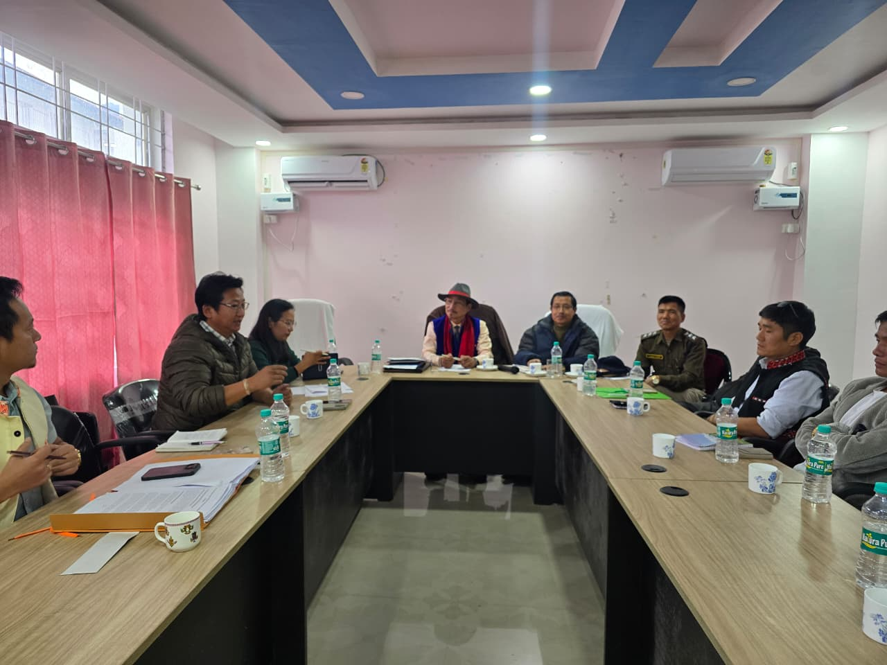
Visit of Hon’ble Member APARC to Boleng
Meeting with Hon’ble Governor Lt. Gen. KT Parnaik
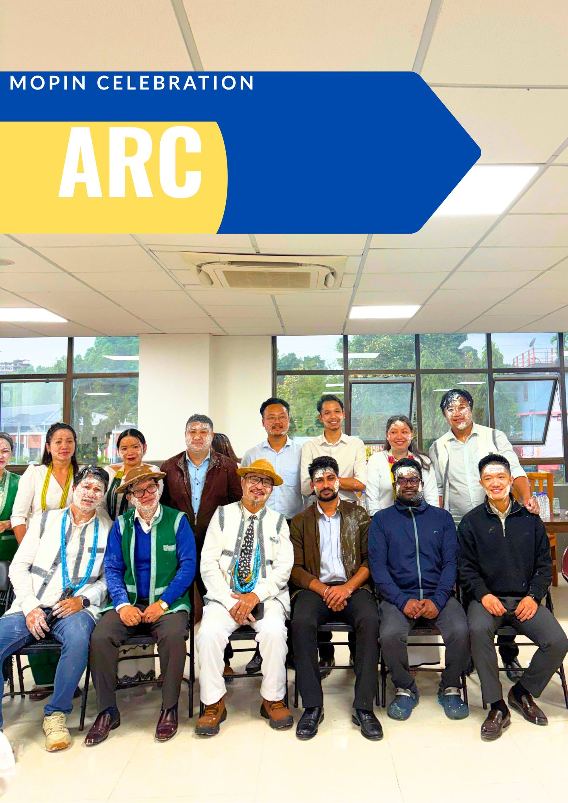
Team APARC Mopin Festival Celebration
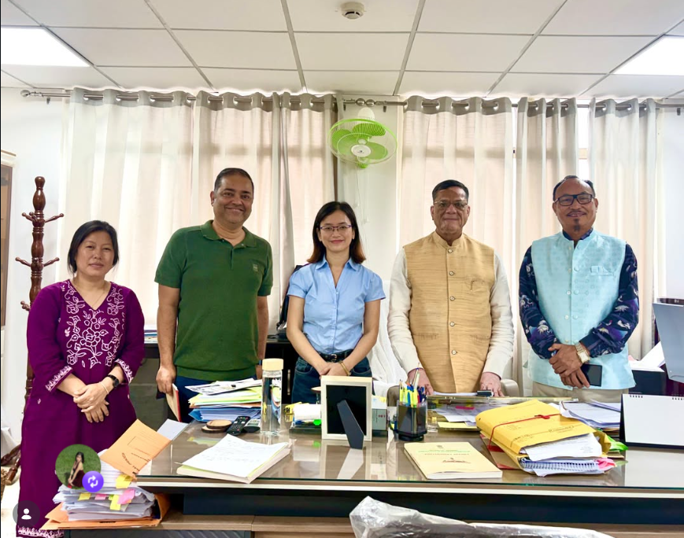
Miss Geyin Miyu, Brand Ambassador of APARC
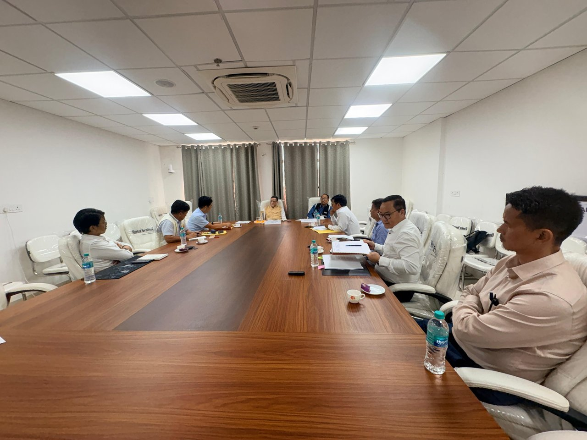
Meeting with Urban Affairs Dept. & IMC
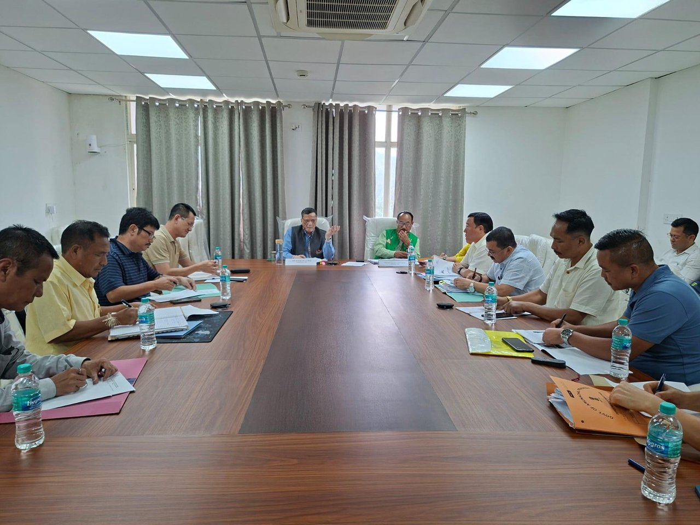
Consultation with Officers of Various Directorates
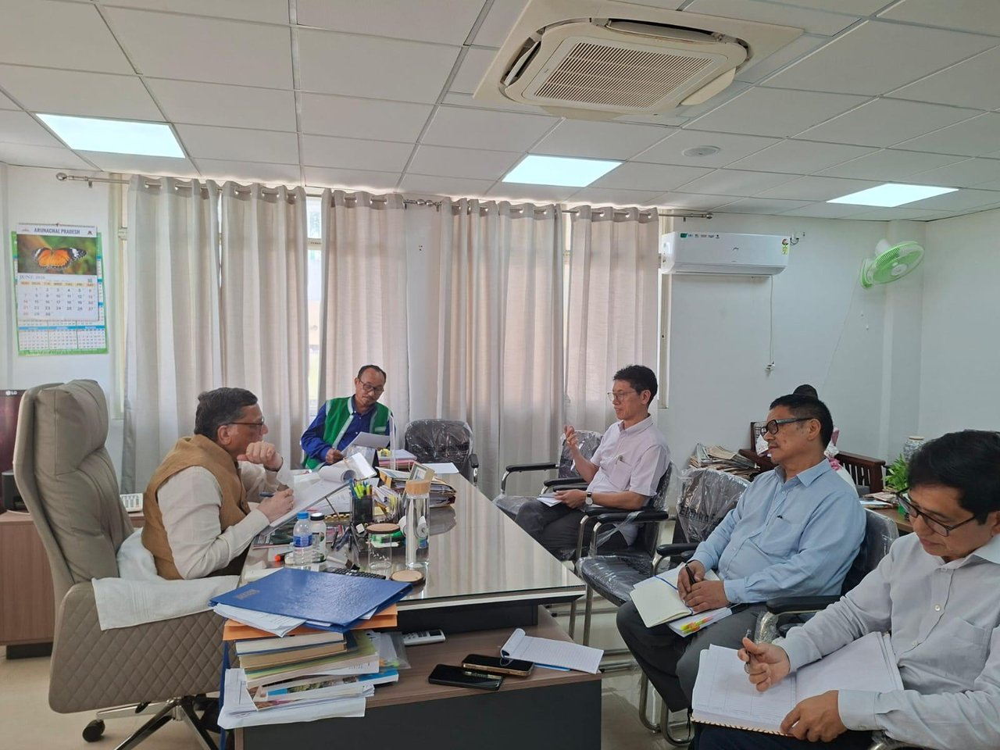
Meeting with Health & Family Welfare Department

Meeting with Secretary-cum-Director, DoTCL
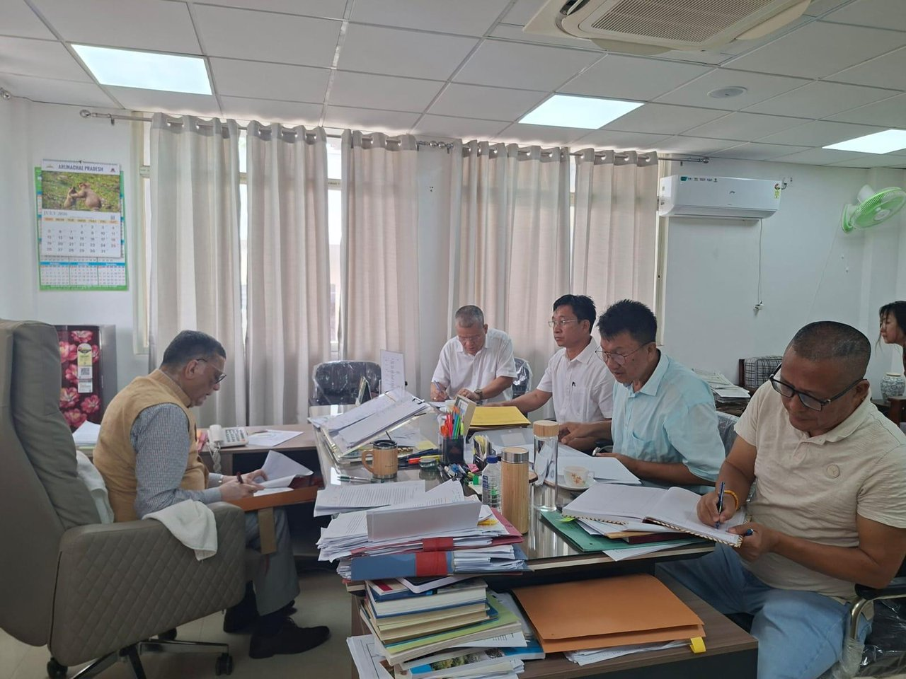
Meeting with Directors of Various Departments
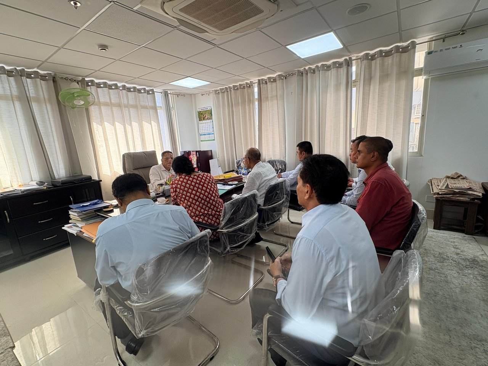
Meeting with Finance & Planning Department
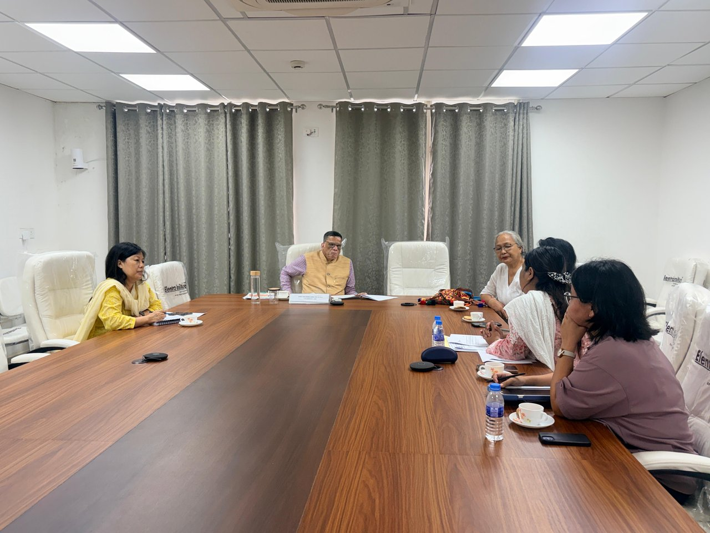
Meeting with AP Women Welfare Society

Meeting with Administrative Training Institute (ATI)
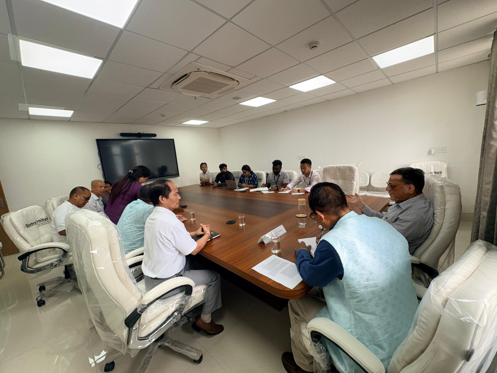
Meeting with Food & Civil Supplies Dept.